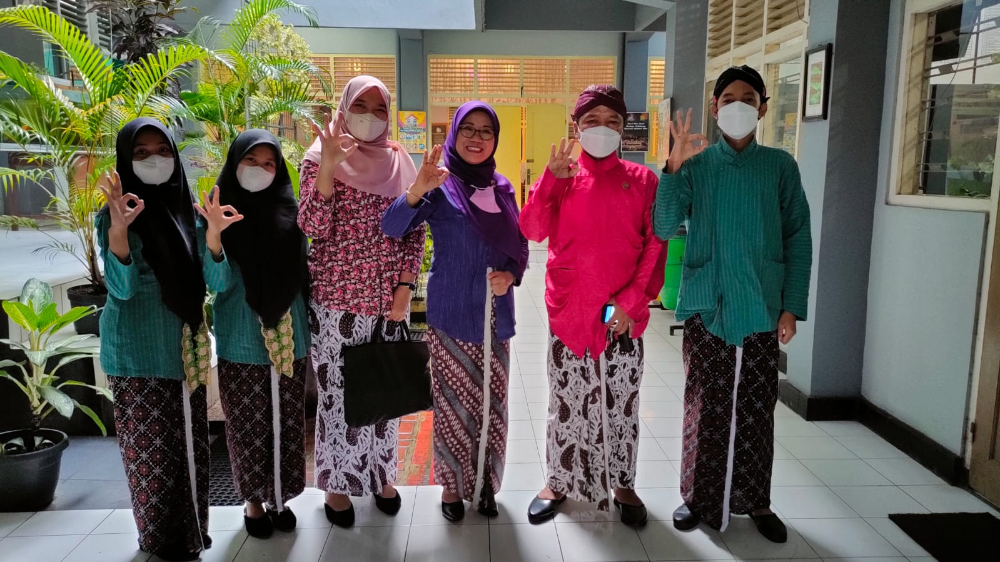

Presentasi Mengenai Sekolah Adiwiyata
Kamis,17 November 2022
KADER ADIWIYATA SMA N 1 CANGKRINGAN MENJADI NARASUMBER BEST PRACTISE ADIWIYATA DI SMA N 1 SLEMAN
SMA Negeri 1 Cangkringan sudah menyandang gelar Sekolah Adiwiyata Nasional sejak 2018 dan saat ini tahun 2022 baru berjuang untuk berusaha meraih penghargaan Sekolah Adiwiyata Mandiri. Dengan penghargaan tersebut sudah banyak sekolah atau instansi baik dari lingkup DIY maupun lingkup luar DIY yang belajar tentang Adiwiyata di SMA Negeri 1 Cangkringan. Selain kedatangan tamu yang studi tiru tentang Adiwiyata, Tim inti dan kader adiwiyatanya juga sering mendapatkan permohonan dari sekolah atau instansi lain menjadi narasumber yang ada kaitannya dengan sekolah adiwiyata misal ke SMK Muhammadiyah Pakem, SMA Negeri 1 Ngemplak, SMA Negeri 2 Sleman, SMK Negeri 1 Cangkringan, dan sebagainya. Kamis, 17 November 2022 Tim Inti dan Perwakilan Kader Adiwiyata SMANCA mendapatkan undangan permohonan untuk menjadi narasumber dari SMA Negeri 1 Sleman dalam Workshop Best Practise Adiwiyata. Kegiatan tersebut diikuti oleh 104 duta adiwiyata SMA Negeri 1 Sleman yang bertujuan untuk mempersiapkan para dutanya untuk berperan aktif dalam menggerakkan seluruhwarga sekolahnya untuk selalu peduli lingkungan. Dalam kesempatan tersebut dari pihak tim adiwiyata dan kader adiwiyata SMANCA diwakili oleh Rahmad Budiyono,S.Pd. selaku ketua adiwiyata, Arum Mustikawati,S.Pd. selaku sekretaris, serta Dyah Ratri Sekarkinasih, Mafasa Khoirunisa, Rhafif Yogiantoro selaku perwakilan dari kader adiwiyata. Dalam kesempatan acara tersebut sebagai pengantar workshop Best Practise adiwiyata, Rahmad Budiyono,S.Pd. menyampaikan informasi kaitannya dengan kegiatan adiwiyata di SMANCA, baik profil, penghargaan, serta semua warga sakolah dalam melaksanakan kegiatan pembiasaan penerapan 6 aspek PRLH. Selanjutnya perwakilan kader adiwiyata menyampaikan presentasinya tentang program, peran serta dan tugas sebagai kader adiwiyata ditambah dengan peran serta kader adwiyata dalam penerapan 6 aspek PRLH ditambah kegiatan kampanye dan publikasi yang telah dilaksanakan. Kegiatan diakhiri dengan tanya jawab dengan peserta workshop best practise adiwiyata.